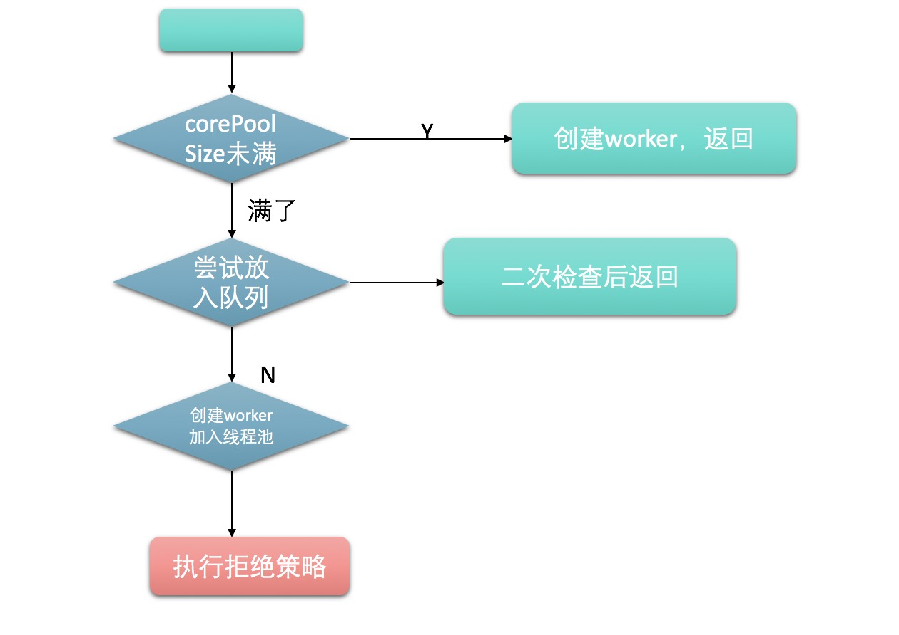
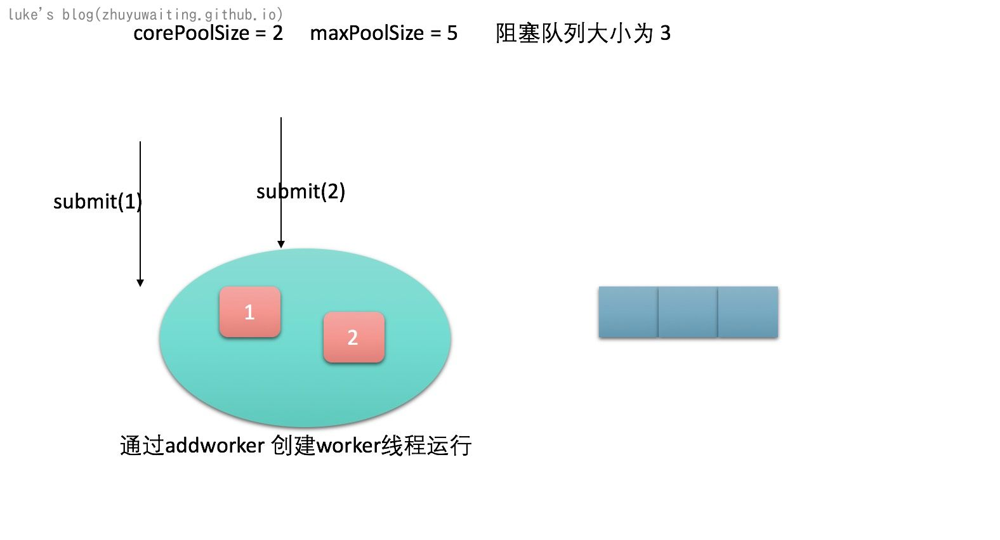
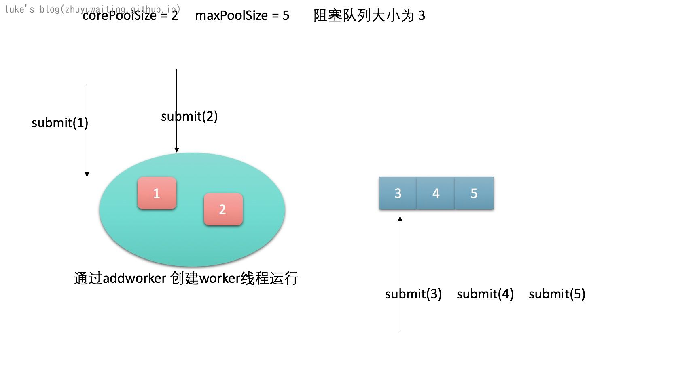
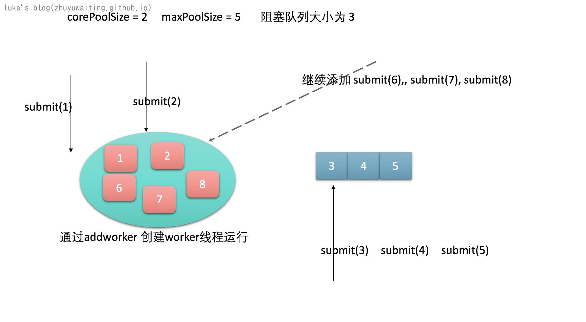

前言：
在《阿里巴巴java开发手册》中指出了线程资源必须通过线程池提供，不允许在应用中自行显示的创建线程，这样一方面是线程的创建更加规范，可以合理控制开辟线程的数量；另一方面线程的细节管理交给线程池处理，优化了资源的开销。而线程池不允许使用Executors去创建，而要通过ThreadPoolExecutor方式。
通过线程池创建线程是为了代码规范，以及线程池优化资源的开销。
不适用Executor而使用THreadPoolExecutor是为了让使用线程池的同学明确线程池运行规则，规避资源耗尽的风险。
示例
1 | public class FixedThreadPoolDemo { |
说明： 创建了一个线程池，提交了3个多线程任务到线程池中运行。
源码分析
属性
状态属性
1 | //记录线程池状态和线程数量 （总共32位，前三位表示线程池状态，后29位表示线程数量） |
说明:
状态：
1 | RUNNING: Accept new tasks and process queued tasks |
- RUNNING：接受新任务并且处理阻塞队列中的任务
- SHUTDOWN：拒绝新任务但是处理阻塞队列中的任务
- STOP: 拒绝新任务并且抛弃阻塞队列中的任务同时中断正在处理的任务
- TIDYING ： 所有任务都执行完（包括阻塞队列中的任务） 当前线程池活动线程数为0，调用terminated方法
- TERMINATED ：terminated被执行完毕
状态转化：
1 | RUNNING -> SHUTDOWN |

其他属性
1 |
|
说明：默认的拒绝策略是AbortPolicy 抛出异常。
构造函数:
View Code
1 | public ThreadPoolExecutor(int corePoolSize, |
- 核心线程池大小
- 线程池的最大的容量
- keepAliveTime 线程等待时间
- workQueue 等待队列
- threadFactory 线程生产工厂
- handler 拒绝策略
核心函数
submit()
1 | // 以FutureTask的方式去运行线程 |
说明： submit（）方法只是通过newTaskFor方法，把任务封装成FutureTask对象，之后统一调用execute方法 并且返回这个Future
worker
View Code
1 | // 工作线程，注意其继承自AQS 自带锁特性 |
说明： worker 是一个继承了AQS的类，自带锁特性，并且worker提供了对于线程的封装。
execute
向线程池加入一个任务，这个任务可能会放入池子中，也可能会放入队列中
1 | // 在将来执行给定的任务，可能被一个新线程执行，也可能被已经存在的线程执行。 |
说明： 不考虑线程池关闭等异常情况，正常流程如下：

addWorker
说明： addWorker主要是向线程池中的运行池加入一个打工仔Worker用于执行任务。 一旦加入到运行池，就会立即启动
View Code
1 | // firstTask的作用是新线程应该首先运行的任务，Workers传入firstTask 来再线程数很少的时候绕过队列 活着当队列满了的时候绕过队列 |
说明： workers 是真正的执行者线程，一个任务可以通过addWork加入到执行线程的条件：线程池开启并且不超过corePoolSize 或者maxPoolSize
addWork() 方法加入线程池中之后会调用线程的start()方法。
worker.start
1 |
|
说明： 外部传入的线程实际是变成了一个个任务，由worker线程来循环执行。先处理firstTask，如果firstTask执行完毕再从队列中获取任务。
会有前置执行 beforeExecute和后置执行afterExecute钩子， 后置执行处理一些异常等等信息。
1 | protected void beforeExecute(Thread t, Runnable r) { } |
前置执行后置执行默认不处理任何事情
getTask
1 | private void decrementWorkerCount() { |
说明： getTask的核心功能：
- 从队列中获取一个任务
- 如果没有获取到任务，判断是否需要杀死当前线程，以减少同时运行的线程数。
processWorkerExit
1 | private void processWorkerExit(Worker w, boolean completedAbruptly) { |
说明： processWorkerExit 函数，是每个线程退出后的钩子函数，需要从运行池中移除，并且校验现有的线程数目是否足够，不足需要补充。
tryTerminate
1 | private void interruptIdleWorkers(boolean onlyOne) { |
说明：如果worker中还有线程，则需要中断一个线程，然后尝试设置状态为整理，成功，则直接终止线程。
shutdown
1 | private void advanceRunState(int targetState) { |
说明： 校验权限，设置状态，中断线程，尝试终结。
拒绝策略
1 | public static class CallerRunsPolicy implements RejectedExecutionHandler { |
总结
假设corePoolSize=3 maxPoolSize=5 阻塞队列大小为 3 提交线程流程如下

继续添加，corePoolSize满了，加入阻塞队列

此时队列满了，继续添加submit(6),submit(7),submit(8)

在继续添加就没办承受了，所以执行拒绝策略
执行的时候，先执行自己的任务，然后通过getTask从队列中获取任务执行。
提交流程：
- 如果worker数目不超过corePoolSize ，创建新的worker，开启一个线程
- 如果worker数目超过了corePoolSize 放入阻塞队列
- 如果阻塞队列满了，不超过maxPoolSize,创建新的worker，开启一个新的线程
- 如果超过了maxPoolSize，直接拒绝，执行拒绝策略。
执行流程：
- 实际执行是有worker来执行的，worker数目是真正运行的线程数目，提交的线程叫做任务。
- worker执行首个任务，执行完毕后从队列中获取，获取到则继续执行run。
- 如果获取不到，则考虑要不要退出，释放线程。